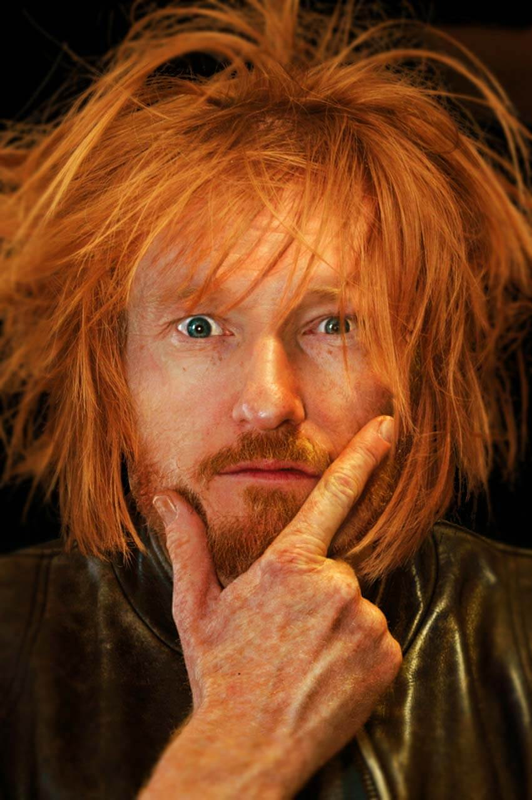
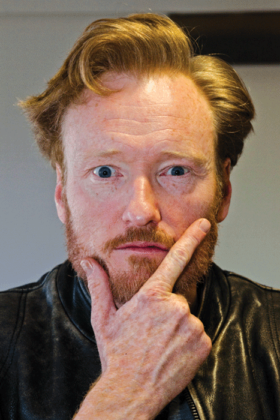

Conan O'Brien Bad Hair Day
Photoshop Contest - Worth1000.com
Conan O'Brien Bad Hair Day Photoshop Contest
One of the first online communities I became a part of was worth1000.com back when I was a junior in high school I believe (that'd be 2005 if anyone was curious). A friend had introduced me to the site as an avid photoshopper. He thought it would be a good place for me to partake in the various daily photoshop competitions, and boy was he right. I was hooked. Worth1000 is no longer around in it's pure form, it was bought by design crowd.



